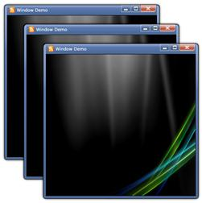

|
XAML |
|
<sync:WindowControl x:Name="windowControl" x:Class="Syncfusion.Tools.Silverlight.Samples.ExplorerDemo" xmlns="http://schemas.microsoft.com/winfx/2006/xaml/presentation" xmlns:x="http://schemas.microsoft.com/winfx/2006/xaml" Title="Window Demo" Icon="feed.png" xmlns:d="http://schemas.microsoft.com/expression/blend/2008" xmlns:mc="http://schemas.openxmlformats.org/markup-compatibility/2006" mc:Ignorable="d" WindowStartupLocation="Manual" xmlns:sync="clr-namespace:Syncfusion.Windows.Tools.Controls;assembly=Syncfusion.Shared.Silverlight" Height="465" Width="800"> </sync:WindowControl> |
|
C# |
|
WindowControl window = new WindowControl(); window.Title = "Window Demo"; window.Icon = new BitmapImage(new Uri("feed.png")); Image image = new Image(); image.Source = new BitmapImage(new Uri("WindowBG.jpg")); window.Content = image; window.WindowStartupLocation = Syncfusion.Windows.Tools.Controls.WindowStartupLocation.Manual; |
The Window control can be positioned manually, using the properties Top and Left. The following code snippet explains the making of cascade windows using the properties Top and Left.
|
C# |
|
double _top = 300; double _left = 300;
void MainPage_Loaded(object sender, RoutedEventArgs e) { for (int i = 0; i < 3; i++) { WindowDemo OwnerWindow = new WindowDemo(); OwnerWindow.Top = _top; OwnerWindow.Left = _left; OwnerWindow.Show();
_top += 50; _left += 50; } } |

Figure 1095: Cascade arrangement of Windows